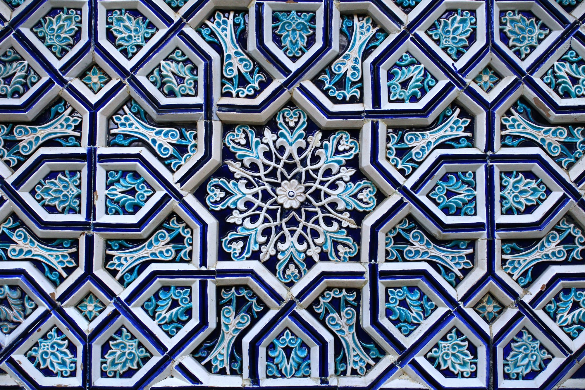

Qatag'on qurbonlari va jadidlarning oqlanishi: mustaqillik yillarida tarixiy xotira (1991–2002)
Mustaqillikdan keyin O'zbekiston jadid ma'rifatparvarlari va sovet qatag'oni qurbonlari xotirasini tiklashni milliy tarixni qaytarishning muhim qismiga aylantirdi. Ushbu maqola jadidlarning qatl etilishi, oqlanishi va xotira sanalari hamda majmualarining tashkil etilishini manbalarga asoslangan faktlar bilan bayon qiladi.

1991-yilda mustaqillikka erishgach, O'zbekiston XX asr boshidagi jadid ma'rifatparvarlari va sovet davridagi siyosiy qatag'on qurbonlari xotirasini tiklashga kirishdi. Bu — davlat qurilishi va milliy tarixni qaytarishning markaziy qismlaridan biri bo'ldi: ko'p yillar davomida nomi tilga olinmagan yoki «xalq dushmani» deb qoralangan adib va arboblar jamiyatga qaytarildi.
Jadidlar kim edi
Jadidlar — XX asr boshidagi Turkistonda ta'lim, matbuot va jamiyatni isloh qilishni yoqlagan ma'rifatparvar ziyolilar. Harakatning asoschilaridan biri Mahmudxo'ja Behbudiy 1919-yilda halok bo'lgan. Keyingi avlod jadid adiblari orasida Abdurauf Fitrat, shoir Abdulhamid Cho'lpon (1893-yilda Andijonda tug'ilgan) va yozuvchi Abdulla Qodiriy (1894-yilda tug'ilgan) alohida o'rin tutadi.
1937–1938: Katta qatag'on
Stalin davridagi «Katta terror» yillari jadidlar avlodi uchun halokatli bo'ldi. Abdulla Qodiriy 1937-yil 31-dekabrda «xalq dushmani» sifatida qamoqqa olingan. 1938-yil 4-oktabr kuni Toshkentda Qodiriy, Cho'lpon va Fitrat bir guruh — jami o'n sakkiz nafar ziyoli bilan birga otib o'ldirilgan. Bu sana o'zbek madaniyati tarixidagi eng og'ir kunlardan biri sifatida eslanadi. (Manba: Kun.uz; «Abdulla Qodiriy» — ochiq manbalar.)

Sovet davridagi qisman oqlash
Sovet hokimiyati 1950–1960-yillardagi «iliqlik» (ottepel) davrida ayrim qatag'on qurbonlarini yuridik jihatdan qisman oqlagan bo'lsa-da, jadid adiblarining asarlari keng kitobxonga asosan 1980-yillarning oxiri — oshkoralik (glasnost) davrida qaytdi. Cho'lpon ham aynan shu davrda to'liq oqlangan va asarlari qayta nashr etila boshlagan. (Manba: «Cho'lpon» — ochiq manbalar.)
Mustaqillikdan keyingi e'tirof
Mustaqillik yillarida jadidlar davlat darajasida e'tirof etildi. Abdulla Qodiriyga vafotidan keyin 1991-yilda Alisher Navoiy nomidagi Davlat mukofoti, 1994-yilda esa Mustaqillik ordeni berildi. Jadid arboblari nomi ko'cha, maktab, oliygoh va mukofotlarga berildi, asarlari maktab va oliy ta'lim dasturlariga kiritildi. (Manba: «Abdulla Qodiriy» — ochiq manbalar.)
Qatag'on qurbonlarini yod etish kuni
Birinchi Prezident Islom Karimovning 2001-yil 1-maydagi farmoniga binoan har yili 31-avgust — «Qatag'on qurbonlarini yod etish kuni» sifatida belgilandi. Shu kuni davlat rahbari va jamoatchilik qatag'on qurbonlari xotirasini yod etadi. (Manba: Gazeta.uz; Lex.uz.)
«Shahidlar xotirasi» majmuasi
2002-yil 31-avgustda Toshkent shahrining Yunusobod tumanida «Shahidlar xotirasi» yodgorlik majmuasi doirasida «Qatag'on qurbonlari xotirasi» muzeyi ochildi. Majmua mustaqillik va ozodlik yo'lida jon bergan insonlar xotirasiga bag'ishlangan. (Manba: Gazeta.uz; Lex.uz.)
Yangi bosqich (2020–2023)
Xotira ishi keyingi yillarda yangi bosqichga ko'tarildi. 2020-yil 8-oktabrda qatag'on qurbonlari merosini chuqurroq o'rganish va ularning xotirasini abadiylashtirishga doir qo'shimcha chora-tadbirlar to'g'risida davlat qarori (F-5598) qabul qilindi. 2023-yildan esa har yili avgust oyi «Qatag'on qurbonlarini yod etish oyi» sifatida o'tkazila boshlandi. (Manba: Lex.uz; Gazeta.uz.)
Xulosa
Jadidlarning oqlanishi va qatag'on qurbonlari xotirasining tiklanishi — mustaqil O'zbekistonning o'z milliy tarixini qaytarib olishining yorqin ko'rinishi. Bu jarayon 1916-yilgi Turkiston qo'zg'oloni [[turkiston-qozgoloni-1916-mardikor]], kollektivlashtirish [[ozbek-kollektivlashtirish-quloqlashtirish-1929-1934]] va «paxta ishi» [[paxta-ishi-tergov-1983-1989]] kabi og'riqli tarixiy voqealar bilan bir qatorda o'rganiladi.

Manbalar
- Lex.uz — F-5598 (8 Oct 2020): additional measures on studying the legacy of victims of repression and perpetuating their memory
- Gazeta.uz — Day of Remembrance of the Victims of Repression (31 August)
- Gazeta.uz — August to be marked as the Month of Remembrance of the Victims of Repression (2023)
- Abdulla Qodiriy — Wikipedia (dates of arrest, execution and posthumous honours)
- Choʻlpon — Wikipedia (execution 4 Oct 1938; rehabilitation during glasnost)